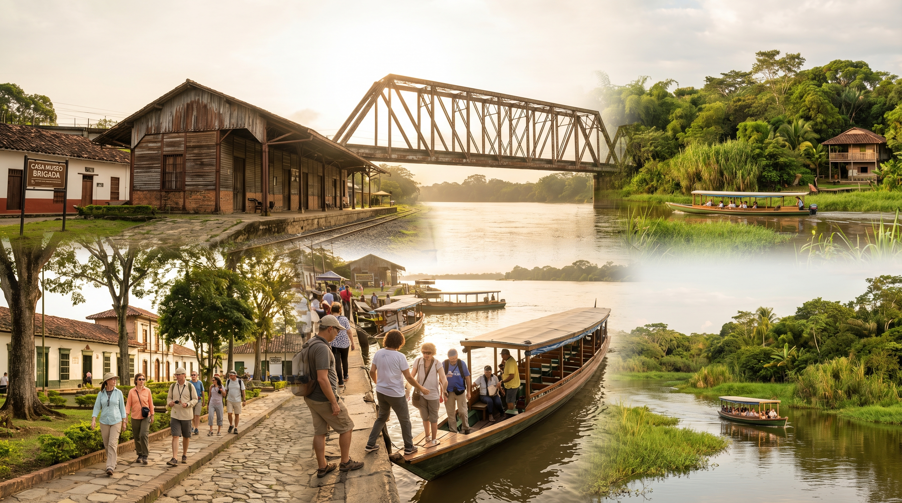

4 días / 3 noches
Ruta 3 — Recorrido histórico y naturaleza
Parques, Casa Museo Brigada, estación, puente, operadores Conecta Nativa y Palm@Beach, puerto de lanchas, Ciénaga de Barbacoas y Biochicoas.
- Ideal para conectar patrimonio bélico-ferroviario con navegación en la ciénaga.
- Pasadías históricos referenciales: $59.000 – $120.000 por persona.